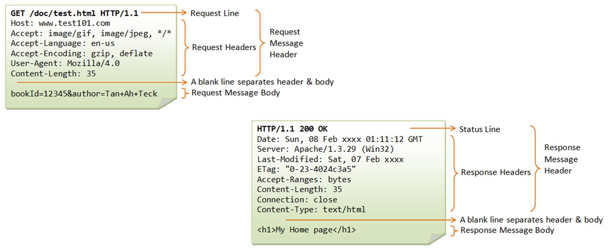

Welcome to your Jupyter Book#
This is a small sample book to give you a feel for how book content is structured. It shows off a few of the major file types, as well as some sample content. It does not go in-depth into any particular topic - check out the Jupyter Book documentation for more information.
Check out the content pages bundled with this sample book to see more.
Intro from cybercamp#
«Ante todo no hagas daño» La filtración de datos personales puede atentar contra los derechos fundamentales de las personas, además de causar otros riesgos
Seguridad
Discriminación
Autonomía
Derecho a ser dejado en paz.
The Right to Privacy” – Warren II y Brandeis, 1890
Nadie será objeto de injerencias arbitrarias en su vida privada, su familia, su domicilio o su correspondencia, ni de ataques a su honra o a su reputación. Toda persona tiene derecho a la protección de la ley contra tales injerencias o ataques.
Artículo 12, Declaración universal de los Derechos Humanos, 1948
“Toda persona tiene derecho al respeto de su vida privada y familiar, de su domicilio y de sus comunicaciones.”
Artículo 7, Carta de los Derechos Fundamentales de la Unión Europea, 2000
Toda persona tiene derecho a la protección de los datos de carácter personal que la conciernan.
Estos datos se tratarán de modo leal, para fines concretos y sobre la base del consentimiento de la persona afectada o en virtud de otro fundamento legítimo previsto por la ley. Toda persona tiene derecho a acceder a los datos recogidos que la conciernan y a su rectificación.
El respeto de estas normas quedará sujeto al control de una autoridad independiente.
Artículo 8, Carta de los Derechos Fundamentales de la Unión Europea, 2000
PRISM es un programa secreto de la NSA que fue revelado por Snowden. A través de PRISM, la NSA obtenía acceso a los servidores de compañías tecnológicas estadounidenses, como Google, Facebook, Apple, Microsoft, Yahoo!, entre otras. PRISM estaba diseñado para monitorear las actividades de personas consideradas “amenazas” o “sospechosas”, pero la magnitud de la recolección de datos era mucho mayor, ya que afectaba a millones de personas alrededor del mundo. El programa UPSTREAM permitía a la NSA recopilar información de los routers en buena parte del mundo. Xkeyscore era una interfaz que permitía el acceso a los datos privados recolectados a partir de algún identificador.
Cambridge Analytica obtuvo datos de 87 millones de usuarios de Facebook sin su consentimiento. Los datos fueron usados para crear perfiles psicológicos y influir en elecciones, como las de EE. UU. en 2016. El caso reveló cómo los datos personales pueden ser explotados para manipular la opinión pública. Facebook fue multado con 5 mil millones de dólares y el caso impulsó la creación de regulaciones de privacidad, como el RGPD.
Vigilancia masiva Perfilado y recomendaciones Seguimiento en línea (tracking) Dispositivos inteligentes (smartphones e IoT) Recolección excesiva de datos Redes sociales y sobreexposición Compartición, venta y publicación de datos Brechas de datos
La información personal recogida puede ser utilizada para crear perfiles de usuario. Identificadores, actividad en la red, fotografías, localización, contactos, likes, clicks, mensajes, pagos… Uniendo, enlazando y analizando estos datos se nos pueden sugerir productos, nuevos contactos, viajes, películas, etc. Las cookies y el browser fingerprinting son herramientas comunes para este fin.



Las cookies son pequeños archivos de texto que se almacenan en el dispositivo del usuario cuando visita un sitio web. Las cookies se utilizan para almacenar preferencias, como el idioma del sitio, información de inicio de sesión, o elementos en un carrito de compras. Existen diferentes tipos de cookies: Cookies de sesión: Se eliminan cuando se cierra el navegador. Cookies persistentes: Permiten recordar al usuario entre sesiones. Cookies de terceros: Son colocadas por servicios externos para seguir la actividad del usuario en diferentes sitios web.
El fingerprinting permite generar identificadores únicos a partir de la combinación de características del dispositivo del usuario, el sistema operativo, el buscador, configuraciones, etc. Cabeceras HTML User-agent Accept Content encoding Content language Atributos Javascript Canvas Plugins Configuración pantalla WebGL Atributos dispositivo

Los permisos otorgados a las aplicaciones móviles pueden suponer amenazas para la seguridad y privacidad. Algunos permisos requieren la aceptación explícita de los usuarios.
Los dispositivos IoT pueden registrar datos de uso y compartirlos con el fabricante. Asistentes, Smart TV, neveras, lavadoras, aspiradoras inteligentes, cámaras, etc.
Peticiones de registro excesivas. Formularios de registro con campos innecesarios. Recolección de actividad no justificada. Uso de dispositivos o aplicaciones. Posicionamiento GPS en LBS. Encuestas, puntuaciones, interacciones.
Los datos publicados pueden ser explotados: un perfil público puede permitir acoso, robo de identidad o ingeniería social.
Geolocalización automática en fotos, etiquetar ubicaciones de casa/trabajo, o desafíos virales que piden datos personales.
Revelación de información de conducta que puede ayudar a criminales.
Hoy podemos utilizar la IA para suplantar la identidad, incluidas fotografías, vídeos y voz, lo que puede suponer riesgos adicionales de seguridad.
Es habitual que empresas compartan datos privados de sus clientes. Estas comparticiones se suelen hacer al amparo de acuerdos de confidencialidad. Otros datos, especialmente de agencias estadísticas, pueden ser compartidos a terceros con fines de investigación. Los data brokers se dedican a recolectar y vender datos personales. Una protección incorrecta podría llevar a la revelación de datos personales.
Incluso si somos cuidadosos, las empresas que almacenan nuestros datos pueden sufrir filtraciones masivas.